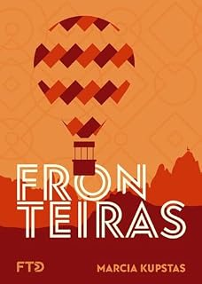

Fronteiras
Márcia Kupstas
Trabalho de português contendo slides, mapa mental, resumo e opiniões sobre o livro

Slides
Participantes
- Benicio Santana
- Erik Tatsuya
- Gustavo Quirino
- Kevyn Oliveira Felix
- Lucas Ferreira
- Samuel Bicalho
Informações do trabalho
Sala8M2
DisciplinaPortuguês
ProfessoraDomênica